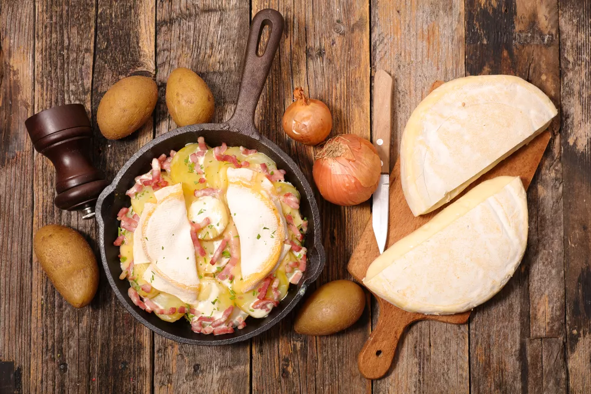

Tartiflette

Tartiflette à la poêle
Ingrédients
- Reblochon
- Pommes de terre
- Lardons
- Oignons
- Muscade
- Cuire les pommes de terre à la casserole
- Faire dorer les lardons et les lamelles d'oignon à la poêle
- Ajouter le reblochon coupé en deux et couvrir
- Assaisonner avec sel, poivre et muscade